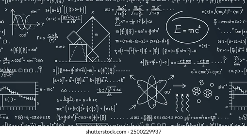

Las matemáticas son una ciencia formal
que estudia las propiedades, relaciones
y el comportamiento de números, figuras geométricas
y conceptos abstractos mediante el razonamiento lógico.
Las matemáticas están mucho más presentes en nuestro día a día de lo que a veces imaginamos y son una herramienta fundamental para entender y transformar el mundo.

Antes de comenzar, me gustaria poner una frase reflexibla porque no todo es quebrarte la cabeza pensando.
"Las matemáticas no se trata de números, ecuaciones, cálculos o algoritmos: se trata de comprensión."
— William Paul Thurston.
Esta frase nos recuerda que las matemáticas son, en realidad, una forma de ver y comprender las reglas del funcionamiento del universo y de nuestras propias ideas.
Ejemplo con la ecuación y = 2x + 1. Cada valor de x da un valor de y.
| x | Operación | y |
|---|---|---|
| -2 | 2(-2) + 1 | -3 |
| -1 | 2(-1)+ 1 | -1 |
| 0 | 2(0)+ 1 | 1 |
| 1 | 2(1) +1 | 3 |
| 2 | 2(2)+1 | 5 |
¿Quieres verificar si la recta que te salió en tu problema es correcta?
Abre el apartado de gráfica de GeoGebra, escribe tu ecuación
(por ejemplo y = 2x + 1) y compara la gráfica de GeoGebra con la de tu resultado.